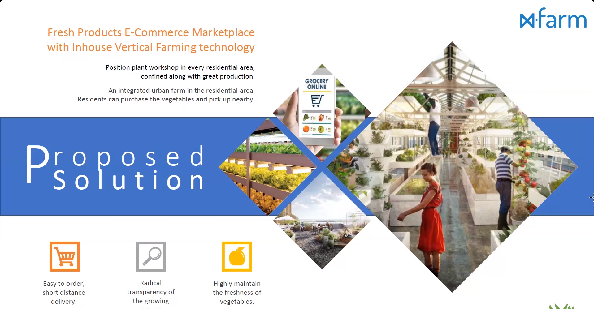
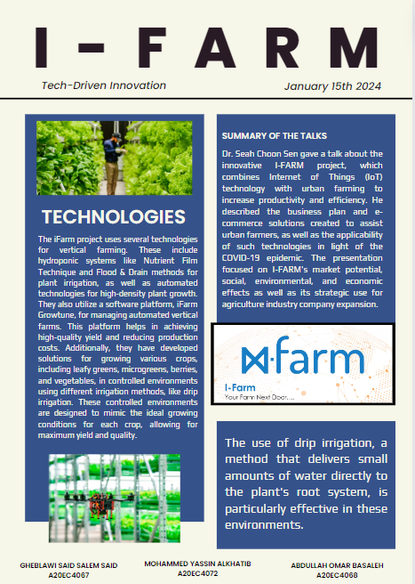
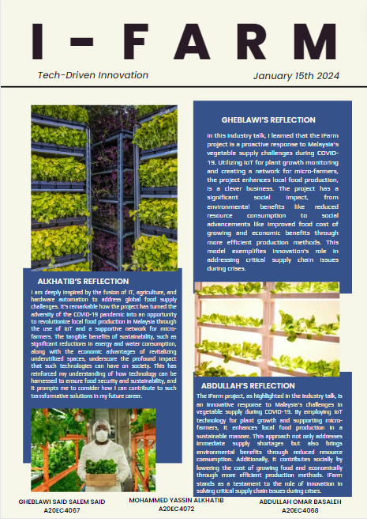

My Reflection
The recent talk on the innovative iFarm project, hosted by UTM JB, was a captivating exploration of the intersection between IT, agriculture, and hardware automation in tackling global food supply challenges, particularly highlighted during the COVID-19 pandemic.
This event was an eye-opener in understanding how technology, specifically IoT, can be integrated into agriculture to revolutionize food production in Malaysia. It was inspiring to see the practical application of technology in creating a supportive network for micro-farmers and how this initiative leads to tangible sustainability benefits, including significant reductions in energy and water usage.
Additionally, the economic implications of utilizing underutilized spaces for productive farming were profound. This talk has significantly broadened my perspective on the potential of technology in ensuring food security and sustainability. It has fueled my ambition to be a part of such transformative solutions in my future career, underscoring the need to think innovatively and act proactively in the face of global challenges. The seamless execution of the event and the expertise of the speakers made the experience truly enriching, leaving me with a renewed sense of purpose and a clear vision for my professional journey in leveraging technology for societal good.
 A screenshot of the talkHowever, while the talk was highly informative and inspiring, there are areas where it could be further enhanced for future sessions. Firstly, including case studies or real-world examples of micro-farmers who have successfully implemented these technologies could provide a more practical understanding and inspire attendees with tangible success stories.
In conclusion, while the event was insightful and well-executed, incorporating these suggestions could make future talks even more impactful, providing a more immersive and comprehensive learning experience for participants keen on contributing to transformative solutions in agriculture and technology.
Newsletter
After the Industry Talk we were asked to do a Newsletter include an executive summary, content based on the issues discussed in the talk, and reflection
 Our group poster desgin 1/2  Our group poster desgin 2/2